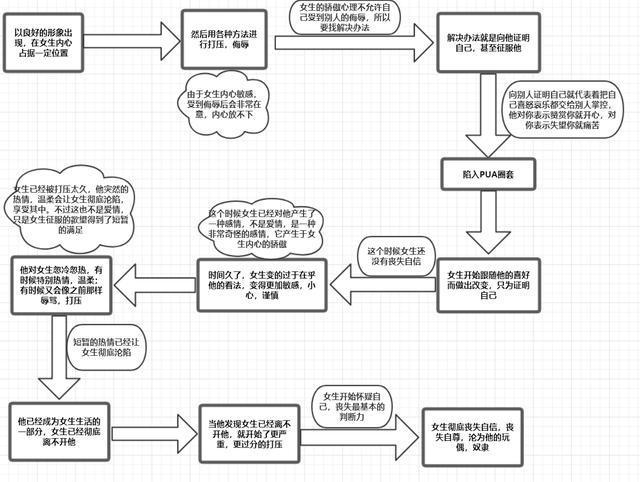

我所分享之文章及程序等等皆免費，無版權，歡迎如實轉載與分享，只須標明出處即可！感恩同行有你！
特別推薦文章
鄧紫棋解解的小說——2507抬上帝入天坑 https://github.com/brianwchh/2507 <---[點擊此前往github在線閱讀] [本地] --->點擊此查看html網頁格式 pdf格式
心學心解 <---[點擊此前往github在線閱讀] [本地] --->點擊此查看html網頁格式 pdf格式
無眠月照無情門 . 失去自由的歌手 <---[點擊此前往github在線閱讀] 本地模式---> html網頁版 pdf版本
西子世人皆唱東坡詞，無人知我歌中淚。胭脂淚痕君不見，肚藏淚酒君不知。法律珠鍊人中鳳，舞臺深處天牢夢。鍍金屠門千豬過，三寸魷魚萬人舔。君入西子渡津口，她閱君腦千秋雪。
心世界(world of heart) <---[點擊此前往github在線閱讀] https://github.com/brianwchh/worldofheart_v2
腦控與愛
阿柄
讓畜生滾出我們的大腦！ 本文是我個人在經歷腦控的心理總結！希望能幫助正在經歷相同遭遇的你們。
心理操控（煤氣燈效應與PUA）本身就已邪惡噁心至極，令多少人浪費了光陰和精力！人生本就匆匆，一秒都不能浪費在渣男身上。更何況是被他操控的奇恥大辱！
如今更有詭異的腦控（讀腦與干擾控制情緒思考等等），畜生玩起了心理貓捉老鼠的遊戲，把活人當成試驗的小白鼠，採取數據用來訓練chatGPT的人工智能！美牠媽名曰“圖靈測試”。這些畜生，下地獄閻王都不敢收，所以又放回了人間！
腦控技術加持的心理操控（PUA）有如下幾個模式：
雪中送炭模式。雪是牠給的，炭也是畜生送的。目的就是要你感動得一把屎一把尿又一把眼淚！然後賣身又賣命，給牠當炮灰！
甜美狗愛情之入坑模式。十句話里有九句是真的，但都無關緊要的，其中一句是爲了帶你入坑的。坑都很甜很美很理想，一句話就是：信主得一切，信主得永生的不勞而獲！這狗東西要是進去了，就被卡主了！
控制模式。苦肉苦情計，一切都是因爲你，也是爲了你，製造內疚，打擊自信，讓你的情緒與之有關，且只與之有關，時而近時而遠，時而甜時而苦，像過山車一樣。你要是做事總是不自信，時時需要依賴對方的反饋來衡量對錯，並決定下一步，基本上你自己就是喜歡上了PUA。PUA的上癮也是從讚許開始的，不管你願不願意，慢慢地讓你喜歡和依賴上對方的反饋。
投其所好模式。腦控的最高藝術就是：你感覺不到痕跡，更別說是阻力。人的潛意識信號很多，當某個信號的刺激足夠大時，就被大腦主意識捕獲與關注，此時你是選擇順從還是抵抗呢？就像性慾一樣。
干擾毅志模式。最下流的就是這招：不裝孫子了！直接催眠與干擾思考，讓你整個人處於低能量狀態！讓你做事情覺得很累很累，堅持不了多久！做事的效率和專注力有關，而專注力與興奮程度有關，就像你做愛，從來沒聽過做愛會累的吧。你曰覺得興奮，越有專注度。人其實就是個內分泌做負反饋的控制系統！你的內分泌給出的反饋是興奮的，你就越會堅持不懈喜歡上做某事，而不會有心理阻力！不喜歡做的事情，才需要用毅志來自我約束戰勝心理阻力！腦控就是直接作用於你的內分泌，讓你覺得做某事很沒趣，三兩下就放棄了，又或慢慢吞吞！你以爲是自己很想睡，你以爲是自己身體很疲憊，你以爲是你自己不喜歡，其實這些都只是你自己以爲的。這也是腦控不留痕跡的一方面，不瞭解腦控，你很難察覺自己被腦控了！
關於愛與健康的心理
我們都年輕過，多少都有過心理過份敏感的心理疾病。或嚴重，或輕。我喜歡客家親人之間的不客氣，因爲是親人，所以才敢“放肆”，不用心理敏感！古人的夫妻相敬如賓是最容易得心理疾病的。
我們不會因爲沒有及時回覆父母的信息而擔心他們會生氣，反而怕怠慢了女神的聖旨，而擔心誅連到親人小弟。有些戀愛，時常覺得痛苦，是因爲太害怕失去，所以，以在乎的名義讓自己敏感，而過份敏感就變成了神經質與脆弱，更胡思亂想，折磨自己也折磨對方，因爲對方也要小心翼翼地照顧你的感受。其實都是因爲那時的我們不自信和心理不健康。
害怕得不到和害怕失去，都是沒有必要的！彼此欣賞的鴛鴦棒槌都打不散。愛也不是佔有與得到，不是“你不愛我，我幹嘛要愛你”的感情生意。當你遇到一個人，瞭解之後，或許你會覺得遇到她本身就是一種難得幸運。對於愛人的愛不減於對子女的愛，那種抱在懷裏，只有愛不釋手，卻沒有佔有，更沒有“你不愛我我幹嘛要愛你的小孩過家家氣”。
愛一個人，是因爲她而快樂。是因爲你覺得她值得，是因爲你希望她快樂。套用一句腎藥的廣告詞就是：她好，你也好，她快樂，你也快樂。只是，你仍渴望着，她心里的那份快樂，是因爲你。
我們沒有這種感覺，是因爲那人還沒出現在我們生命的燈火闌珊處。又或者，其實我們沒讀懂愛，愛是一種修行與修心。愛只有一個字，有的人悟得卻已盲目了半生或一生。
___ 。 ___

PUA(pick-up artist)/煤氣燈效應，即渣男心理術流程，只是這太小兒科了，很容易被識別！
2023年2月28日 於韓國濟州島